Computer Engineer | C++ Systems Developer | Software Developer
I specialize in building high-performance, system-level C++ applications, hardware-accelerated software, and scalable AI/Web platforms. With over 1 year of hands-on experience in C++ software development and debugging, alongside a strong foundation in computer architecture, I engineer solutions that demand absolute performance and precision.
View My ExperienceDeveloped and debugged features for a commercial 3D dental modeling CAD application (teeth-cad). Worked extensively with C++ and Rust to navigate and modify the FreeCAD source code. Resolved critical geometric rendering and logic bugs, including core model physics and issues, to ensure a stable software environment for end-users.
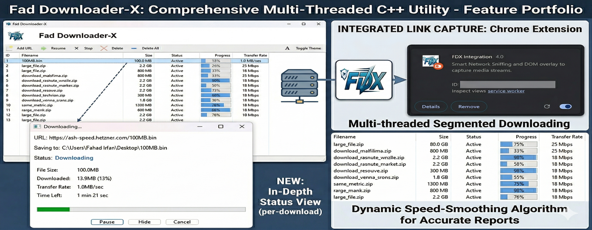
The ultimate high-speed C++ download manager and advanced media sniffer. Engineered with a multi-threaded slicing engine for maximum bandwidth saturation and seamless Chrome browser integration via Native Messaging IPC.
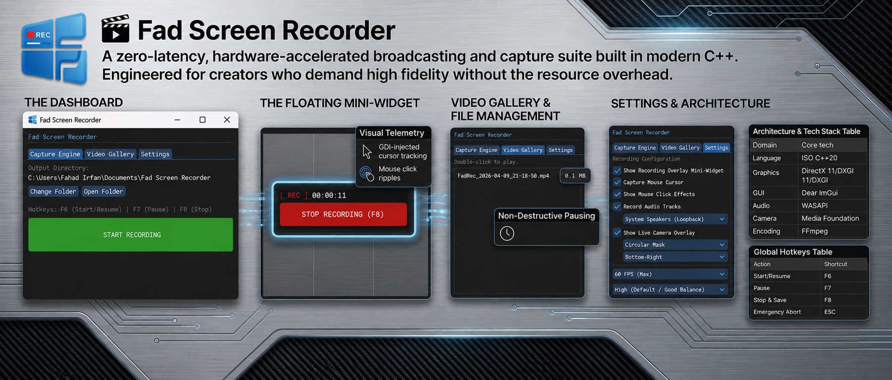
A zero-latency, hardware-accelerated broadcasting and capture suite. Bypasses standard memory copies by mapping GPU textures directly via DXGI, featuring true loopback WASAPI audio routing and FFmpeg encoding.
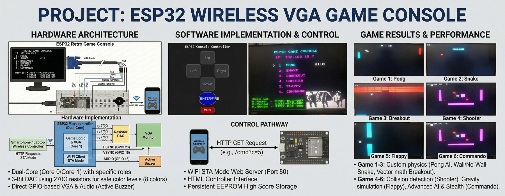
Designed a retro video game console using a single ESP32 to generate raw VGA video signals. It operates in Wi-Fi STA mode, hosting a web server that turns any smartphone into a wireless controller via HTTP GET requests.
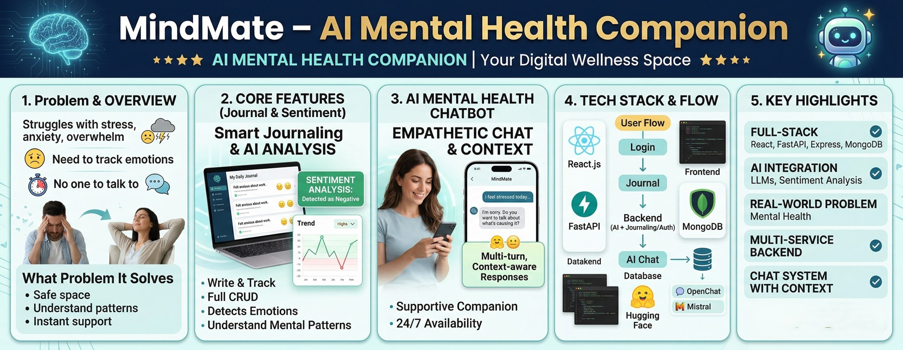
A comprehensive AI Mental Health Companion platform. Features include a full journal system with CRUD operations and search, real-time sentiment analysis, and a custom AI chatbot.
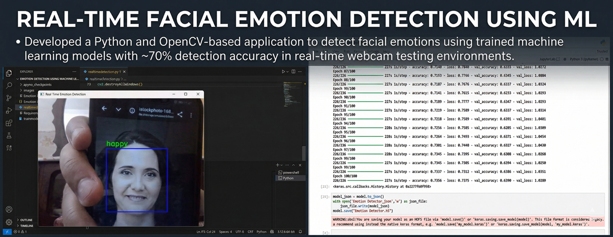
Developed a Python and OpenCV-based application to detect facial emotions using trained machine learning models, achieving ~70% detection accuracy in real-time webcam testing environments.
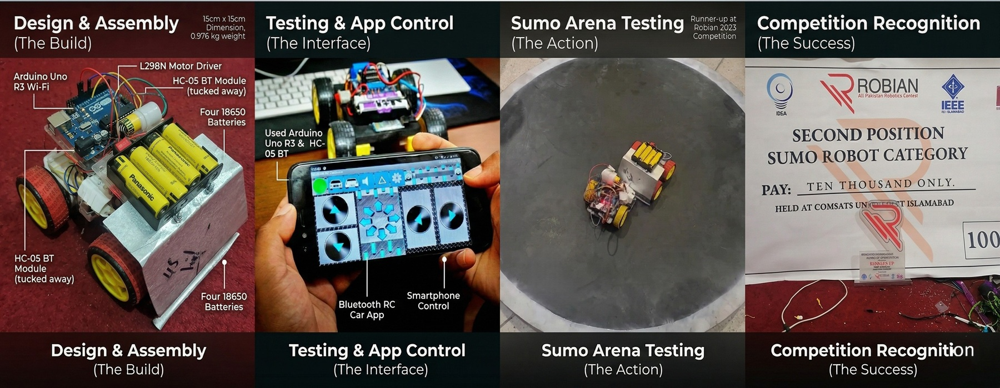
🏆 1st Place Winner at CTS'24. Designed and built an autonomous/mobile-controlled Sumo robot for competitive combat using Arduino, sensors, and a Bluetooth module.
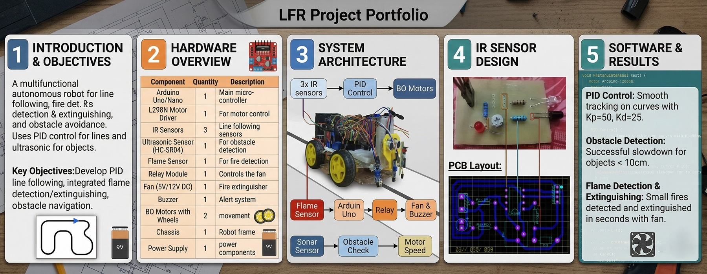
Built a line-following robot using a custom IR sensor PCB, integrated with a flame sensor and fire extinguisher mechanism to autonomously navigate and put out small flames.
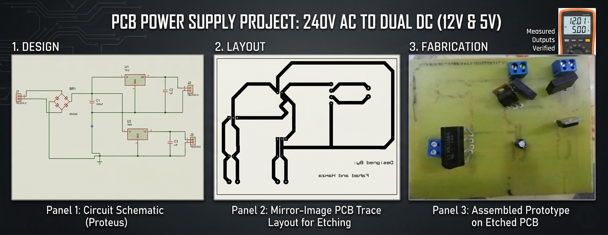
Designed and built a regulated 12V/5V DC power supply and an H-Bridge motor driver circuit for DC motor control, from Proteus simulation to physical PCB hardware implementation.
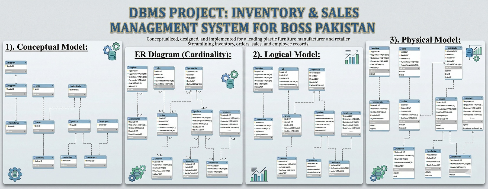
Designed and implemented a MySQL-based database for BOSS Pakistan's inventory and sales management, complete with comprehensive ER models and transaction handling.
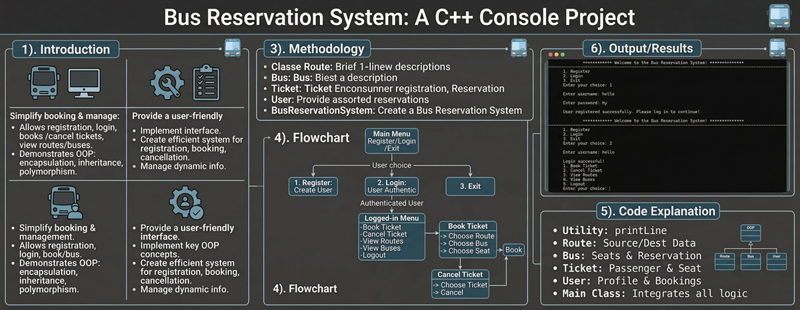
Developed a robust terminal-based system enabling users to view seating, book tickets, and manage schedules utilizing efficient C++ file handling.
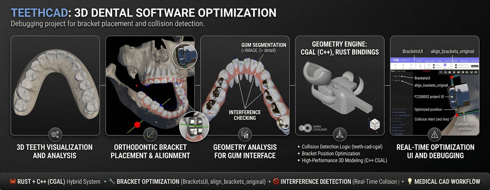
Actively contributed to open-source software by successfully debugging and resolving rendering issues in the 'teeth-cad' repository on GitHub.